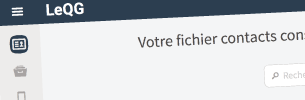
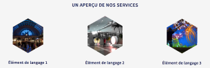

Je m'appelle Damien, web designer-intégrateur
En résumé, j'ai 26 ans et j'ai choisi de faire du web design mon métier
en 2010.
Curieux et motivé, je suis totalement
passionné par la création web sous toutes ses formes
depuis ma première connexion à internet, il y a plus de 10 ans maintenant.
Jour après jour, j'essaye de porter une attention particulière au respect des standards et des problématiques d'ergonomie. Et j'aimerais vraiment pouvoir développer mes compétences à vos côtés.
Concrètement, au quotidien, j'utilise :
- HTML5 & CSS3
- Sass & Less
- jQuery & AJAX
- WordPress
- PHP & MySQL avec PDO
- Illustrator
- Sketch
- Coda ou Atom
- Bower & Grunt
- Git avec le Git flow
Deux projets actuels dont je suis fier :
LeQG.info
LeQG.info est le projet le plus complet que j'ai pu réaliser jusqu'aujourd'hui.
Du design de l'interface jusqu'au développement de l'application, j'ai réalisé chacune des tâches nécessaires à la concrétisation de ce service aujourd'hui utilisé par plusieurs députés et plusieurs campagnes politiques.
Pour ce projet, j'ai travaillé avec différentes technologies : en partant du web design avec HTML - Sass - jQuery pour aller jusqu'au développement avec PHP - MySQL et la création d'une API REST pour l'application mobile.
Digitalarti
Le projet Digitalarti concerne la refonte du site web d'une des références des artlabs parisiens.
Ce projet complexe impliquait différents niveaux de difficulté assez intéressants puisqu'il s'agissait de mieux différencier le site corporate du site communautaire. Il a fallu donc un travail d'architecture de l'information.
Ce projet WordPress s'appuie enfin sur un travail important concernant son côté multilingue et sa forte utilisation d'API extérieures.
Quelques informations en bonus...
- La veille est au cœur de mon activité que ce soit à travers livre, podcasts, blogs ou conférences.
- J'anime régulièrement des formations à destination d'étudiants ou de jeunes professionnels du web.
- Je suis un des intervenants de la KiwiParty 2015 !
- Le partage du savoir est au cœur de ma philosophie
- Passionné, hyperactif et curieux, j'aimerais vraiment faire partie des vôtres :)
- J'apprends très vite et je déteste rester sans savoir...
- J'aime faire à manger et partager mes repas avec des gens sympas !
- Vous ne résisterez pas à ma tarte tomate-chèvre-mozza !
- Je suis fou amoureux de mon vélo et je suis toujours avec mon Yoshi, tel un totem.
- Je peux supporter Dalida, mais je ne suis pas sûr que vous supporterez m'entendre parler incessamment de typographie, jours après jours.